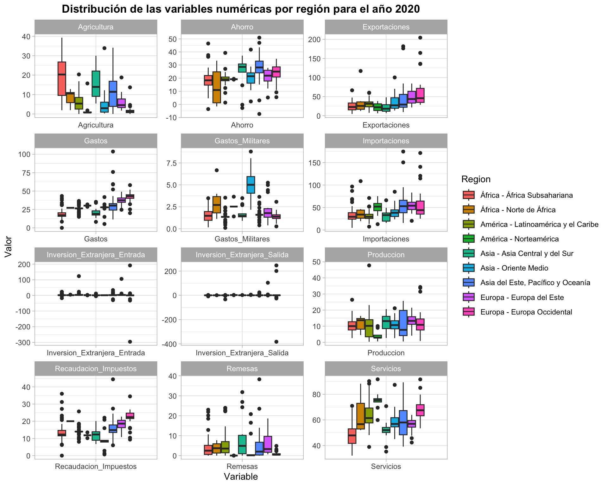
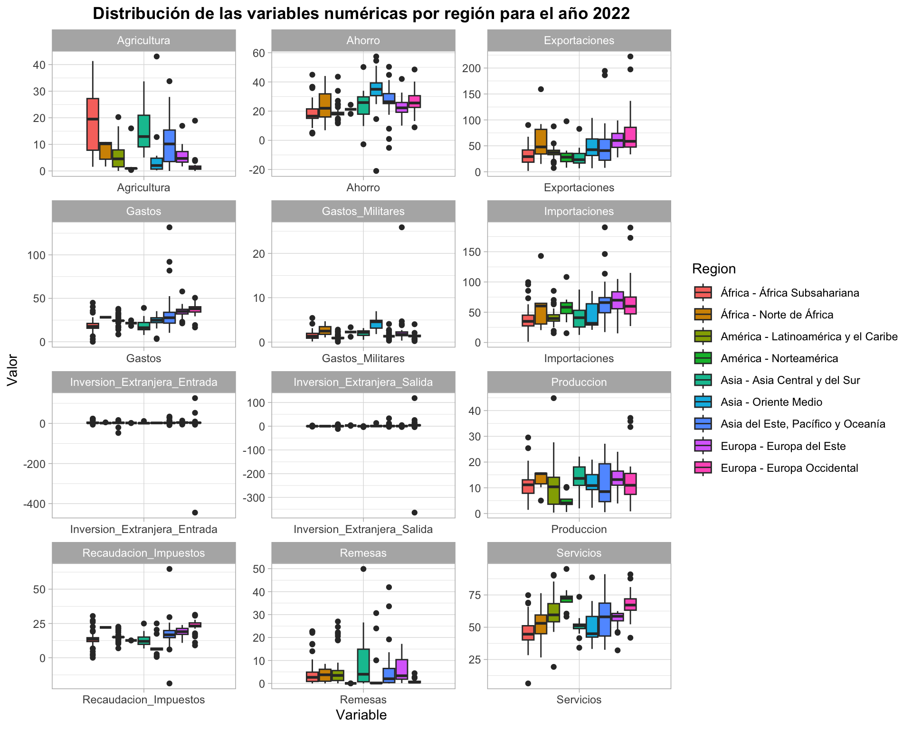
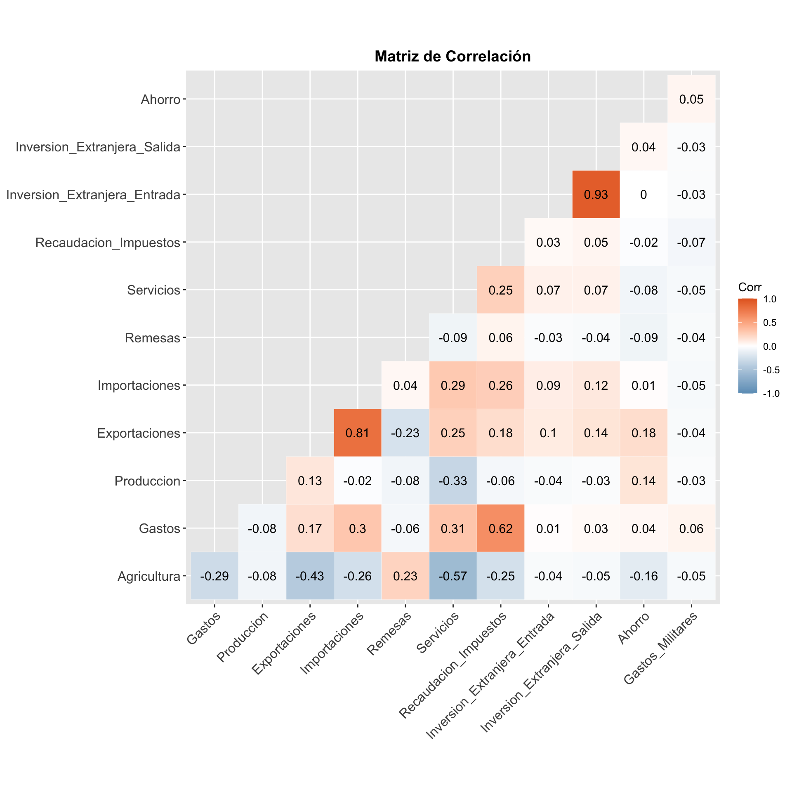
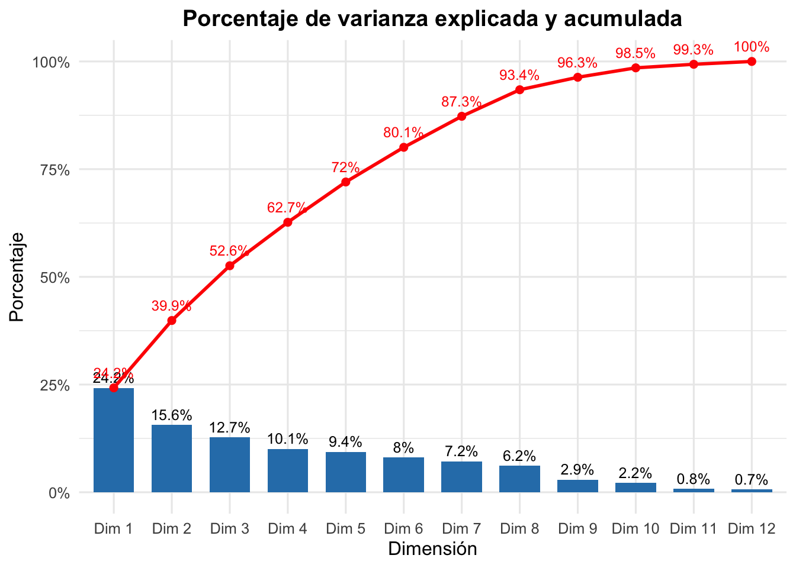
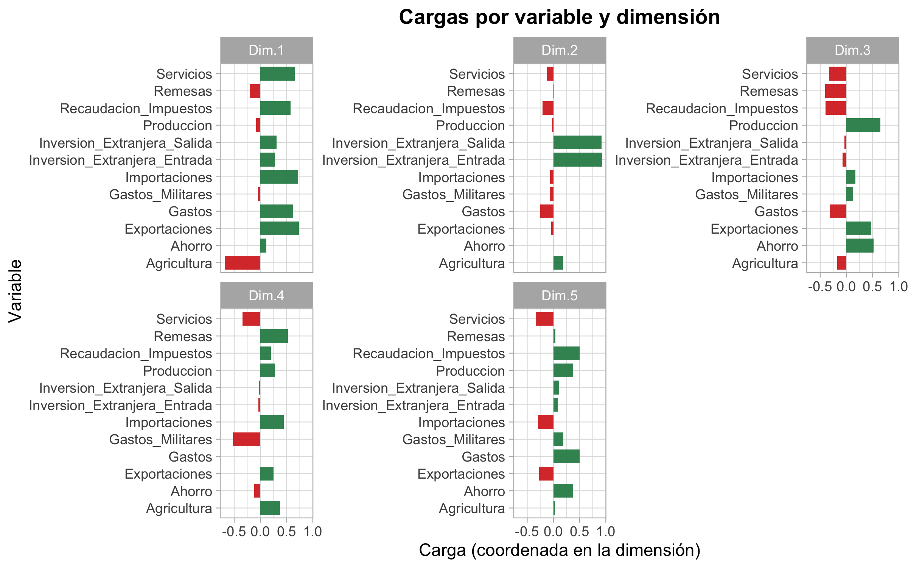
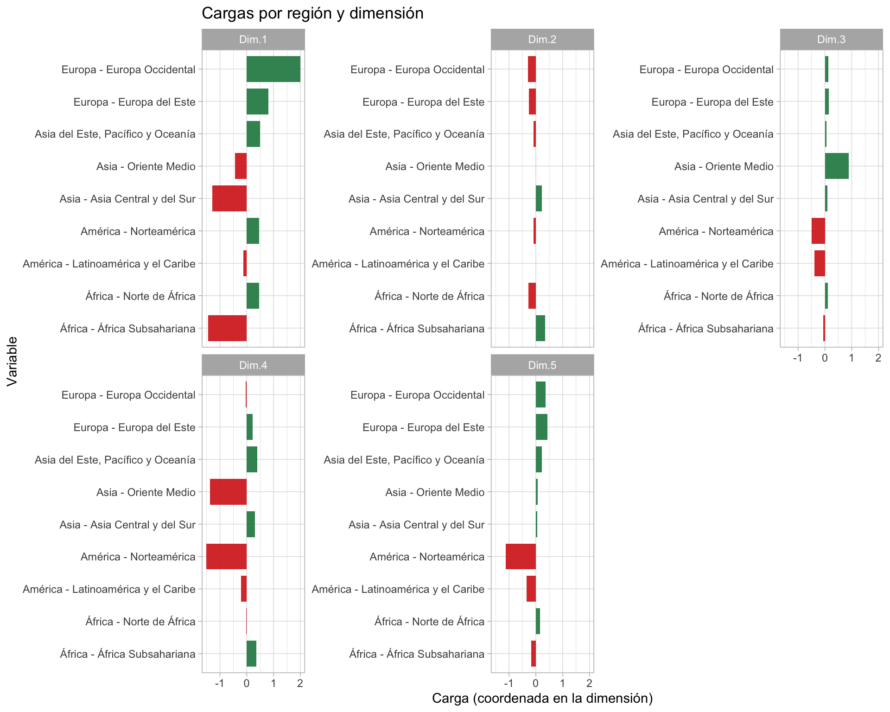

| Variables | Tipo_Variable | Descripción |
|---|---|---|
| Pais | Nominal | País |
| Año | Ordinal | Año |
| Region | Nominal | Región |
| Servicios | Cuantitativa | Servicios, valor agregado (% PIB) |
| Gastos | Cuantitativa | Gastos (% PIB) |
| Ahorro | Cuantitativa | Ahorro bruto (% PIB) |
| Exportaciones | Cuantitativa | Exportaciones de bienes y sevicios (% PIB) |
| Importaciones | Cuantitativa | Importaciones de bienes y servicios (% PIB) |
| Produccion | Cuantitativa | Producción, valor agregado (% PIB) |
| Inversion_Extranjera_Entrada | Cuantitativa | Inversión extranjera, entrada neta de capital (% PIB) |
| Inversion_Extranjera_Salida | Cuantitativa | Inversión extranjera, salidad neta de capital (% PIB) |
| Deuda | Cuantitativa | Total Deuda (% PIB) |
| Recaudacion_Impuestos | Cuantitativa | Recaudación impostivia (% PIB) |
| Agricultura | Cuantitativa | Agricultura, silvicultura y pesca, valor agregado (% PIB) |
| Remesas | Cuantitativa | Remesas de trabajdores y compensación de empleados recibidas (% PIB) |
| Gastos_Militares | Cuantitativa | Gastos militares (%PIB) |
Taller 3 - Modelo Regresión Multinomial
0. Información general
En este trabajo se realizará un análisis factorial multiple con el fin de examinar trayectorias y agrupamientos de diferentes variables económicas, para identificar factores latentes, similitudes y diferencias a lo largo de los últimos cinco años (2019 al 2023), desagregado por regiones geográficas. Los datos están a nivel país, pero se realizó un procedimiento para agrupar los países en 14 regiones, con base en sus similitudes geográficas y étnicas. Las regiones son: Asia Central y del Sur, Oriente Medio, Asia del Este, Pacífico y Oceanía, Europa Occidental, Europa del Este, Norte de África, África Subsahariana, Latinoamérica y el Caribe y Norteamérica.
Las variables a analizar son las siguientes:
1. Análisis exploratorio
1.1. Revisión de datos faltantes
| x | |
|---|---|
| Pais | 0 |
| Country Code | 0 |
| Año | 0 |
| Region | 0 |
| Agricultura | 113 |
| Deuda | 809 |
| Gastos | 489 |
| Exportaciones | 190 |
| Inversion_Extranjera_Entrada | 132 |
| Inversion_Extranjera_Salida | 243 |
| Importaciones | 190 |
| Produccion | 162 |
| Remesas | 103 |
| Recaudacion_Impuestos | 488 |
| Servicios | 100 |
| Gastos_Militares | 337 |
| Ahorro | 310 |
Se identifica una cantidad significativa de valores faltantes en las series numéricas, se realizará un proceso de imputación de variables que incluirá:
- Interpolación de variables, usando el método na.spline.
- Exclusión de registros, en los casos en los que todos los datos sean faltantes para las series numéricas.
- Eliminación de variables, si la cantidad sigue siendo significativa: una cantidad mayor a 40% de datos faltantes serán eliminadas.
- Si quedan faltantes en algunos países, se imputarán los registros con base en la mediana de la región al que pertenecen y el año.
| x | |
|---|---|
| Pais | 0 |
| Country Code | 0 |
| Año | 0 |
| Region | 0 |
| Agricultura | 0 |
| Gastos | 0 |
| Exportaciones | 0 |
| Inversion_Extranjera_Entrada | 0 |
| Inversion_Extranjera_Salida | 0 |
| Importaciones | 0 |
| Produccion | 0 |
| Remesas | 0 |
| Recaudacion_Impuestos | 0 |
| Servicios | 0 |
| Gastos_Militares | 0 |
| Ahorro | 0 |
Ya la data está limpia para poder ser usada en los análisis posteriores.
1.2. Resumen de las variables
| Pais | Length:1060 | Class :character | Mode :character | NA | NA | NA |
| Country Code | Length:1060 | Class :character | Mode :character | NA | NA | NA |
| Año | Length:1060 | Class :character | Mode :character | NA | NA | NA |
| Region | Length:1060 | Class :character | Mode :character | NA | NA | NA |
| Agricultura | Min. :-0.03915 | 1st Qu.: 1.91786 | Median : 6.44714 | Mean : 9.69659 | 3rd Qu.:15.35606 | Max. :43.05999 |
| Gastos | Min. :-29.68 | 1st Qu.: 18.14 | Median : 25.71 | Mean : 27.30 | 3rd Qu.: 33.66 | Max. :145.68 |
| Exportaciones | Min. :-53.96 | 1st Qu.: 23.69 | Median : 35.51 | Mean : 42.21 | 3rd Qu.: 50.61 | Max. :222.31 |
| Inversion_Extranjera_Entrada | Min. :-444.7069 | 1st Qu.: 0.9518 | Median : 2.3204 | Mean : 4.4524 | 3rd Qu.: 4.4333 | Max. : 433.7510 |
| Inversion_Extranjera_Salida | Min. :-382.68662 | 1st Qu.: 0.06023 | Median : 0.32504 | Mean : 2.05555 | 3rd Qu.: 1.32329 | Max. : 424.86749 |
| Importaciones | Min. :-63.51 | 1st Qu.: 30.10 | Median : 42.60 | Mean : 48.51 | 3rd Qu.: 60.04 | Max. :198.45 |
| Produccion | Min. : 0.3311 | 1st Qu.: 6.3978 | Median :10.7039 | Mean :11.3437 | 3rd Qu.:14.8118 | Max. :47.7695 |
| Remesas | Min. : 0.0000 | 1st Qu.: 0.3729 | Median : 2.0253 | Mean : 4.7862 | 3rd Qu.: 5.6622 | Max. :49.9757 |
| Recaudacion_Impuestos | Min. :-31.62 | 1st Qu.: 12.24 | Median : 15.05 | Mean : 16.00 | 3rd Qu.: 19.92 | Max. : 74.93 |
| Servicios | Min. : 6.448 | 1st Qu.: 48.781 | Median : 56.960 | Mean : 57.616 | 3rd Qu.: 65.984 | Max. :102.873 |
| Gastos_Militares | Min. : 0.05409 | 1st Qu.: 1.11769 | Median : 1.43530 | Mean : 1.87469 | 3rd Qu.: 2.18326 | Max. :36.65311 |
| Ahorro | Min. :-44.99 | 1st Qu.: 17.24 | Median : 21.26 | Mean : 22.48 | 3rd Qu.: 28.15 | Max. : 64.31 |
Hallazgos
Análisis univariado de las variables numéricas

Hallazgos

Hallazgos
1.3. Análisis multivariado
Variables numéricas vs. Año y Región
Año 2019
| Region | América - Latinoamérica y el Caribe | América - Norteamérica | Asia - Asia Central y del Sur | Asia - Oriente Medio | Asia del Este, Pacífico y Oceanía | Europa - Europa Occidental | Europa - Europa del Este | África - Norte de África | África - África Subsahariana |
| Agricultura | 4.68 | 0.76 | 12.45 | 2.45 | 10.20 | 1.24 | 4.53 | 10.23 | 19.96 |
| Gastos | 23.85 | 20.31 | 16.63 | 26.48 | 26.18 | 37.50 | 32.72 | 23.39 | 16.42 |
| Produccion | 10.41 | 3.32 | 13.43 | 10.05 | 7.36 | 10.70 | 12.88 | 14.32 | 10.16 |
| Exportaciones | 34.33 | 36.70 | 23.28 | 36.33 | 37.90 | 52.01 | 51.55 | 38.22 | 26.53 |
| Importaciones | 33.81 | 53.48 | 34.87 | 37.86 | 50.56 | 48.30 | 59.73 | 39.27 | 33.19 |
| Remesas | 3.03 | 0.03 | 4.82 | 0.14 | 2.99 | 0.46 | 3.17 | 3.42 | 2.53 |
| Servicios | 61.74 | 78.28 | 51.44 | 54.60 | 58.28 | 67.18 | 56.55 | 54.81 | 48.03 |
| Recaudacion_Impuestos | 14.71 | 11.31 | 11.79 | 10.71 | 18.37 | 23.28 | 18.98 | 19.91 | 12.24 |
| Inversion_Extranjera_Entrada | 3.71 | 1.97 | 1.52 | 1.20 | 2.30 | 2.29 | 3.88 | 2.26 | 2.57 |
| Inversion_Extranjera_Salida | 0.47 | 2.44 | 0.11 | 0.38 | 0.47 | 1.86 | 0.91 | 0.02 | 0.17 |
| Ahorro | 19.68 | 19.98 | 29.33 | 28.90 | 31.33 | 24.80 | 23.25 | 18.43 | 17.81 |
| Gastos_Militares | 1.25 | 2.35 | 1.36 | 4.83 | 1.44 | 1.30 | 1.74 | 2.38 | 1.35 |
| Region | América - Latinoamérica y el Caribe | América - Norteamérica | Asia - Asia Central y del Sur | Asia - Oriente Medio | Asia del Este, Pacífico y Oceanía | Europa - Europa Occidental | Europa - Europa del Este | África - Norte de África | África - África Subsahariana |
| Agricultura | 4.73 | 6.28 | 7.18 | 11.00 | 8.18 | 3.18 | 3.84 | 4.64 | 10.91 |
| Gastos | 4.45 | 1.18 | 6.53 | 6.98 | 16.79 | 6.63 | 5.08 | 0.00 | 6.83 |
| Produccion | 8.26 | 3.53 | 5.46 | 4.73 | 8.92 | 8.78 | 4.82 | 5.17 | 4.73 |
| Exportaciones | 14.81 | 13.12 | 15.05 | 23.93 | 37.29 | 42.56 | 18.43 | 56.26 | 14.95 |
| Importaciones | 13.09 | 24.50 | 21.49 | 14.82 | 34.42 | 36.51 | 14.97 | 49.21 | 16.39 |
| Remesas | 6.41 | 0.02 | 10.51 | 6.44 | 7.32 | 1.06 | 4.96 | 3.10 | 5.07 |
| Servicios | 10.54 | 9.68 | 8.20 | 10.43 | 13.95 | 9.23 | 6.03 | 9.97 | 9.85 |
| Recaudacion_Impuestos | 2.87 | 0.76 | 3.93 | 6.41 | 5.69 | 5.10 | 3.30 | 0.00 | 6.05 |
| Inversion_Extranjera_Entrada | 8.63 | 0.37 | 4.25 | 1.91 | 6.68 | 98.29 | 11.49 | 1.73 | 4.90 |
| Inversion_Extranjera_Salida | 2.12 | 1.02 | 0.43 | 1.73 | 3.86 | 98.79 | 12.01 | 0.35 | 0.94 |
| Ahorro | 4.76 | 0.15 | 11.44 | 12.67 | 12.37 | 8.22 | 5.55 | 16.70 | 7.64 |
| Gastos_Militares | 0.54 | 0.57 | 0.74 | 1.50 | 0.55 | 0.50 | 1.15 | 1.72 | 0.81 |
Hallazgos
Año 2020
| Region | América - Latinoamérica y el Caribe | América - Norteamérica | Asia - Asia Central y del Sur | Asia - Oriente Medio | Asia del Este, Pacífico y Oceanía | Europa - Europa Occidental | Europa - Europa del Este | África - Norte de África | África - África Subsahariana |
| Agricultura | 5.35 | 0.76 | 13.94 | 2.96 | 11.42 | 1.20 | 4.57 | 10.53 | 20.32 |
| Gastos | 26.50 | 30.20 | 19.07 | 27.89 | 30.26 | 43.02 | 37.43 | 27.21 | 17.18 |
| Produccion | 10.20 | 2.88 | 13.16 | 10.67 | 7.72 | 10.85 | 13.30 | 13.69 | 10.03 |
| Exportaciones | 31.33 | 22.13 | 18.25 | 27.17 | 29.20 | 45.84 | 43.69 | 25.58 | 22.78 |
| Importaciones | 29.49 | 51.98 | 33.17 | 38.30 | 52.93 | 44.18 | 54.07 | 34.33 | 29.42 |
| Remesas | 3.53 | 0.03 | 4.88 | 0.15 | 1.99 | 0.48 | 3.27 | 3.70 | 2.48 |
| Servicios | 61.46 | 75.47 | 52.04 | 56.86 | 58.01 | 67.55 | 56.94 | 56.69 | 47.90 |
| Recaudacion_Impuestos | 13.97 | 11.83 | 12.28 | 8.39 | 14.86 | 22.40 | 18.61 | 20.02 | 12.28 |
| Inversion_Extranjera_Entrada | 2.97 | 1.76 | 0.86 | 1.13 | 1.69 | 0.55 | 2.68 | 1.50 | 1.46 |
| Inversion_Extranjera_Salida | 0.21 | 2.09 | 0.30 | 0.09 | 0.36 | 0.41 | 0.50 | 0.09 | 0.09 |
| Ahorro | 19.09 | 19.18 | 28.59 | 21.47 | 28.15 | 24.99 | 21.89 | 10.95 | 18.35 |
| Gastos_Militares | 1.35 | 2.53 | 1.47 | 5.01 | 1.59 | 1.38 | 1.78 | 2.71 | 1.48 |
| Region | América - Latinoamérica y el Caribe | América - Norteamérica | Asia - Asia Central y del Sur | Asia - Oriente Medio | Asia del Este, Pacífico y Oceanía | Europa - Europa Occidental | Europa - Europa del Este | África - Norte de África | África - África Subsahariana |
| Agricultura | 4.99 | 5.29 | 7.55 | 9.09 | 8.40 | 2.60 | 3.92 | 4.33 | 11.12 |
| Gastos | 4.70 | 0.87 | 7.29 | 8.51 | 18.17 | 7.76 | 5.76 | 0.00 | 8.08 |
| Produccion | 8.56 | 3.40 | 5.72 | 5.43 | 8.80 | 8.46 | 4.41 | 4.97 | 4.47 |
| Exportaciones | 11.92 | 11.67 | 11.25 | 25.30 | 38.84 | 45.29 | 19.66 | 39.43 | 13.61 |
| Importaciones | 12.16 | 19.31 | 14.26 | 17.78 | 33.59 | 37.10 | 14.37 | 32.71 | 17.76 |
| Remesas | 7.39 | 0.01 | 10.72 | 7.28 | 7.83 | 1.10 | 5.27 | 3.11 | 5.99 |
| Servicios | 11.12 | 8.97 | 8.29 | 10.78 | 13.49 | 9.05 | 5.32 | 15.28 | 9.75 |
| Recaudacion_Impuestos | 2.83 | 0.90 | 3.96 | 6.62 | 6.86 | 5.11 | 3.20 | 0.00 | 6.31 |
| Inversion_Extranjera_Entrada | 19.65 | 0.72 | 3.60 | 2.47 | 10.55 | 69.57 | 21.13 | 1.56 | 6.03 |
| Inversion_Extranjera_Salida | 5.47 | 0.41 | 0.57 | 1.74 | 4.76 | 97.84 | 21.08 | 0.28 | 1.49 |
| Ahorro | 5.53 | 0.15 | 12.22 | 9.65 | 11.17 | 7.10 | 5.87 | 14.71 | 8.65 |
| Gastos_Militares | 0.57 | 0.60 | 0.75 | 1.90 | 0.63 | 0.56 | 1.28 | 2.01 | 0.84 |

Hallazgos
Año 2021
| Region | América - Latinoamérica y el Caribe | América - Norteamérica | Asia - Asia Central y del Sur | Asia - Oriente Medio | Asia del Este, Pacífico y Oceanía | Europa - Europa Occidental | Europa - Europa del Este | África - Norte de África | África - África Subsahariana |
| Agricultura | 5.21 | 0.97 | 14.10 | 2.39 | 9.96 | 1.11 | 4.81 | 10.66 | 19.15 |
| Gastos | 25.71 | 26.90 | 19.44 | 26.89 | 31.41 | 40.10 | 36.02 | 25.63 | 16.53 |
| Produccion | 10.50 | 2.05 | 13.61 | 11.12 | 8.69 | 10.75 | 13.13 | 14.37 | 10.89 |
| Exportaciones | 34.89 | 20.98 | 21.35 | 29.96 | 27.25 | 49.89 | 51.06 | 37.45 | 23.74 |
| Importaciones | 34.61 | 54.19 | 35.75 | 42.62 | 58.69 | 49.88 | 59.67 | 47.13 | 32.14 |
| Remesas | 3.79 | 0.03 | 4.08 | 0.33 | 1.93 | 0.48 | 3.32 | 4.32 | 2.43 |
| Servicios | 59.32 | 74.05 | 51.18 | 51.92 | 56.82 | 66.93 | 57.02 | 52.13 | 45.88 |
| Recaudacion_Impuestos | 14.40 | 12.26 | 10.35 | 7.15 | 15.71 | 23.22 | 19.02 | 19.67 | 12.42 |
| Inversion_Extranjera_Entrada | 3.08 | 2.32 | 1.18 | 2.27 | 2.02 | 3.80 | 4.27 | 1.40 | 2.28 |
| Inversion_Extranjera_Salida | 0.27 | 3.31 | 0.14 | 0.12 | 0.33 | 5.74 | 1.22 | 0.09 | 0.08 |
| Ahorro | 19.32 | 20.53 | 24.50 | 29.83 | 28.40 | 26.30 | 21.88 | 21.13 | 17.24 |
| Gastos_Militares | 1.12 | 2.34 | 1.77 | 4.89 | 1.42 | 1.32 | 1.68 | 2.64 | 1.50 |
| Region | América - Latinoamérica y el Caribe | América - Norteamérica | Asia - Asia Central y del Sur | Asia - Oriente Medio | Asia del Este, Pacífico y Oceanía | Europa - Europa Occidental | Europa - Europa del Este | África - Norte de África | África - África Subsahariana |
| Agricultura | 4.92 | 5.09 | 8.38 | 10.82 | 8.58 | 2.69 | 3.82 | 4.56 | 11.28 |
| Gastos | 4.79 | 2.35 | 6.88 | 9.21 | 21.00 | 7.53 | 5.75 | 0.00 | 7.75 |
| Produccion | 8.66 | 3.71 | 6.00 | 5.84 | 9.18 | 8.89 | 4.40 | 4.34 | 4.87 |
| Exportaciones | 11.45 | 27.82 | 17.58 | 26.67 | 44.79 | 46.34 | 19.00 | 50.32 | 16.41 |
| Importaciones | 12.34 | 23.24 | 16.79 | 19.09 | 35.25 | 37.22 | 16.97 | 37.58 | 18.55 |
| Remesas | 7.76 | 0.01 | 11.65 | 9.21 | 9.02 | 0.99 | 5.35 | 3.42 | 6.51 |
| Servicios | 12.37 | 8.82 | 8.79 | 14.38 | 14.77 | 9.79 | 6.17 | 14.03 | 11.36 |
| Recaudacion_Impuestos | 2.69 | 0.46 | 4.22 | 7.42 | 8.92 | 5.05 | 3.12 | 0.00 | 5.87 |
| Inversion_Extranjera_Entrada | 6.56 | 0.27 | 3.07 | 2.96 | 9.10 | 82.98 | 5.10 | 1.57 | 5.96 |
| Inversion_Extranjera_Salida | 6.33 | 1.00 | 1.12 | 2.52 | 5.57 | 66.77 | 4.57 | 0.27 | 0.82 |
| Ahorro | 5.44 | 1.48 | 10.73 | 14.07 | 10.90 | 6.85 | 5.70 | 12.47 | 9.22 |
| Gastos_Militares | 0.56 | 0.57 | 0.74 | 1.62 | 0.74 | 0.67 | 1.11 | 1.62 | 0.84 |

Hallazgos
Año 2022
| Region | América - Latinoamérica y el Caribe | América - Norteamérica | Asia - Asia Central y del Sur | Asia - Oriente Medio | Asia del Este, Pacífico y Oceanía | Europa - Europa Occidental | Europa - Europa del Este | África - Norte de África | África - África Subsahariana |
| Agricultura | 4.56 | 0.97 | 12.94 | 2.06 | 10.16 | 1.10 | 4.72 | 10.22 | 19.51 |
| Gastos | 24.26 | 21.46 | 16.16 | 24.79 | 27.66 | 37.93 | 34.86 | 28.21 | 17.68 |
| Produccion | 10.37 | 4.10 | 13.64 | 10.86 | 8.51 | 10.98 | 13.19 | 15.49 | 11.16 |
| Exportaciones | 37.16 | 28.10 | 23.26 | 42.54 | 40.82 | 58.73 | 60.37 | 47.90 | 29.21 |
| Importaciones | 39.59 | 58.28 | 40.92 | 31.62 | 65.95 | 59.83 | 69.88 | 60.33 | 34.90 |
| Remesas | 3.49 | 0.03 | 4.00 | 0.14 | 2.03 | 0.50 | 3.34 | 3.77 | 2.66 |
| Servicios | 59.55 | 72.44 | 51.12 | 44.96 | 58.03 | 67.17 | 58.48 | 53.03 | 44.61 |
| Recaudacion_Impuestos | 15.05 | 12.63 | 11.99 | 6.35 | 16.70 | 23.17 | 19.01 | 22.11 | 13.47 |
| Inversion_Extranjera_Entrada | 2.96 | 2.29 | 1.34 | 2.33 | 2.35 | 3.33 | 4.10 | 1.69 | 2.59 |
| Inversion_Extranjera_Salida | 0.24 | 2.77 | 0.07 | 0.66 | 0.53 | 3.82 | 0.53 | 0.14 | 0.07 |
| Ahorro | 18.29 | 21.24 | 25.86 | 34.98 | 26.42 | 25.57 | 22.23 | 21.96 | 16.56 |
| Gastos_Militares | 0.90 | 2.27 | 2.18 | 4.59 | 1.32 | 1.38 | 1.76 | 2.47 | 1.33 |
| Region | América - Latinoamérica y el Caribe | América - Norteamérica | Asia - Asia Central y del Sur | Asia - Oriente Medio | Asia del Este, Pacífico y Oceanía | Europa - Europa Occidental | Europa - Europa del Este | África - Norte de África | África - África Subsahariana |
| Agricultura | 4.83 | 5.38 | 8.30 | 11.68 | 8.48 | 3.52 | 3.39 | 4.35 | 11.56 |
| Gastos | 6.01 | 1.71 | 8.41 | 9.90 | 24.40 | 7.78 | 7.47 | 0.00 | 8.38 |
| Produccion | 8.86 | 3.51 | 5.92 | 5.74 | 9.13 | 9.26 | 4.72 | 4.47 | 5.40 |
| Exportaciones | 13.14 | 27.91 | 19.49 | 28.69 | 42.63 | 47.04 | 20.06 | 52.68 | 17.39 |
| Importaciones | 13.59 | 27.22 | 22.29 | 23.24 | 34.14 | 38.76 | 21.28 | 44.61 | 19.79 |
| Remesas | 7.82 | 0.01 | 14.31 | 10.33 | 9.36 | 0.98 | 5.29 | 3.51 | 6.27 |
| Servicios | 13.63 | 11.34 | 8.64 | 15.05 | 15.08 | 10.91 | 6.97 | 16.83 | 11.82 |
| Recaudacion_Impuestos | 3.01 | 0.02 | 5.13 | 7.50 | 11.41 | 5.12 | 3.57 | 0.00 | 5.83 |
| Inversion_Extranjera_Entrada | 9.81 | 0.27 | 2.99 | 2.07 | 8.92 | 91.05 | 3.91 | 1.65 | 5.79 |
| Inversion_Extranjera_Salida | 2.65 | 0.68 | 1.10 | 3.77 | 6.08 | 75.32 | 1.43 | 0.17 | 0.67 |
| Ahorro | 5.57 | 1.66 | 12.71 | 20.01 | 10.94 | 8.62 | 6.53 | 13.50 | 8.32 |
| Gastos_Militares | 0.53 | 0.57 | 0.78 | 1.50 | 0.69 | 0.68 | 4.98 | 1.38 | 1.01 |

Hallazgos
Año 2023
| Region | América - Latinoamérica y el Caribe | América - Norteamérica | Asia - Asia Central y del Sur | Asia - Oriente Medio | Asia del Este, Pacífico y Oceanía | Europa - Europa Occidental | Europa - Europa del Este | África - Norte de África | África - África Subsahariana |
| Agricultura | 4.29 | 0.64 | 13.13 | 2.45 | 10.45 | 0.99 | 3.90 | 9.97 | 20.94 |
| Gastos | 24.49 | 21.89 | 18.11 | 25.92 | 22.59 | 39.65 | 35.26 | 26.91 | 17.59 |
| Produccion | 9.97 | 2.73 | 13.02 | 10.71 | 7.77 | 10.89 | 12.75 | 14.49 | 10.69 |
| Exportaciones | 35.51 | 24.85 | 21.54 | 39.63 | 38.92 | 56.55 | 56.48 | 48.21 | 26.00 |
| Importaciones | 37.60 | 46.01 | 34.46 | 47.89 | 63.48 | 53.99 | 59.84 | 55.14 | 33.48 |
| Remesas | 3.22 | 0.03 | 4.32 | 0.11 | 1.88 | 0.53 | 2.87 | 3.21 | 2.33 |
| Servicios | 60.45 | 73.59 | 51.21 | 51.58 | 58.46 | 67.67 | 59.25 | 52.96 | 47.53 |
| Recaudacion_Impuestos | 15.05 | 12.23 | 11.89 | 8.46 | 15.96 | 24.08 | 19.07 | 20.98 | 13.55 |
| Inversion_Extranjera_Entrada | 2.82 | 1.94 | 0.90 | 1.76 | 1.67 | 0.85 | 3.86 | 1.64 | 2.66 |
| Inversion_Extranjera_Salida | 0.32 | 2.86 | 0.13 | 0.37 | 0.52 | 1.48 | 0.94 | 0.07 | 0.06 |
| Ahorro | 19.77 | 20.14 | 26.10 | 30.90 | 27.34 | 24.77 | 22.27 | 24.35 | 15.77 |
| Gastos_Militares | 0.99 | 2.33 | 2.04 | 5.11 | 1.26 | 1.52 | 1.82 | 2.36 | 1.46 |
| Region | América - Latinoamérica y el Caribe | América - Norteamérica | Asia - Asia Central y del Sur | Asia - Oriente Medio | Asia del Este, Pacífico y Oceanía | Europa - Europa Occidental | Europa - Europa del Este | África - Norte de África | África - África Subsahariana |
| Agricultura | 4.58 | 5.67 | 8.76 | 7.33 | 9.72 | 3.41 | 3.20 | 4.75 | 10.74 |
| Gastos | 9.79 | 1.40 | 16.48 | 12.67 | 32.61 | 8.30 | 9.46 | 0.00 | 13.30 |
| Produccion | 8.57 | 3.99 | 5.86 | 5.16 | 8.83 | 7.70 | 4.69 | 4.29 | 5.37 |
| Exportaciones | 13.61 | 35.20 | 16.57 | 33.22 | 40.72 | 44.79 | 18.08 | 49.06 | 15.98 |
| Importaciones | 14.18 | 24.84 | 23.57 | 37.94 | 32.98 | 37.73 | 15.84 | 42.03 | 18.90 |
| Remesas | 8.03 | 0.01 | 11.33 | 10.11 | 9.73 | 0.94 | 4.76 | 3.27 | 6.12 |
| Servicios | 13.61 | 16.33 | 8.11 | 9.58 | 14.10 | 9.73 | 6.02 | 17.12 | 10.13 |
| Recaudacion_Impuestos | 3.92 | 0.85 | 7.91 | 6.34 | 14.41 | 5.65 | 6.75 | 0.00 | 7.92 |
| Inversion_Extranjera_Entrada | 15.49 | 0.24 | 2.93 | 4.99 | 7.41 | 27.47 | 8.16 | 1.12 | 4.71 |
| Inversion_Extranjera_Salida | 3.38 | 0.65 | 0.31 | 2.06 | 4.69 | 23.94 | 7.35 | 0.30 | 1.84 |
| Ahorro | 5.86 | 0.96 | 10.75 | 14.31 | 22.11 | 9.23 | 5.55 | 12.15 | 8.85 |
| Gastos_Militares | 0.55 | 0.55 | 0.93 | 1.97 | 0.69 | 0.61 | 7.13 | 2.63 | 1.18 |
Hallazgos

Hallazgos
2. Análisis factorial múltiple
Varianza explicada y contribuciones de las variables por dimensión

Hallazgos y tratar de nombrar cada dimensión

Hallazgos
Análisis por individuo (países)

Hallazgos
Análisis por año

Hallazgos

Hallazgos

Hallasgos

Hallazgos

Hallazgos
Análisis por región

Hallazgos
Hallazgos
3. Conclusiones
Resuma las implicaciones del análisis, comentando sobre los patrones encontrados y su relevancia para la comprensión del desarrollo global.